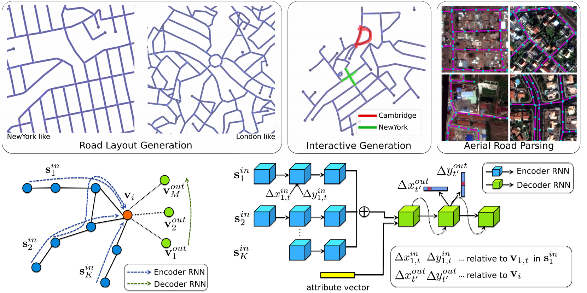
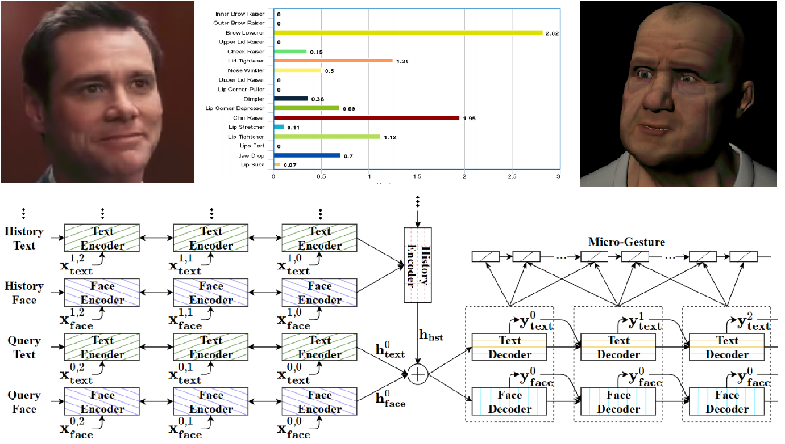
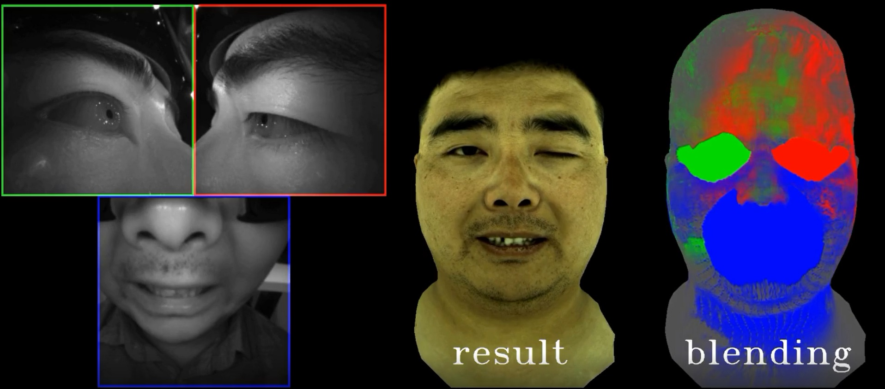

Overview
In this thesis, I focus on methodologies and approaches for digital content creation. The ultimate objective this thesis is heading towards is to build algorithms that create and enable virtual worlds. Concreately, this thesis is composed of two main parts.
-
The first part focuses on the world building aspects, which consists of two chapters:
- Generating virtual houses via a multi-view and multi-modal reconstruction approach.
- Generating virtual cities via a generative model of spatial graphs.
-
The second part focuses on the virtual characters that enables interactive experiences, consisting of two chapters:
- Generating dialogue agents that is capable of making and reading facial expressions.
- Generating photorealistic facial animation to enable user telepresence.
|
|
| Thesis Draft |
Slides Draft |
Virtual House Generation

HouseCraft: Building Houses from Rental Ads and Street Views (ECCV 2016)
Virtual City Generation

Neural Turtle Graphics for Modeling City Road Layouts (ICCV 2019 oral)
Virtual Chatbot Generation

A Face-to-Face Neural Conversation Model (CVPR 2018)
Virtual Telepresence Generation

Expressive Telepresence via Modular Codec Avatar (ECCV 2020)